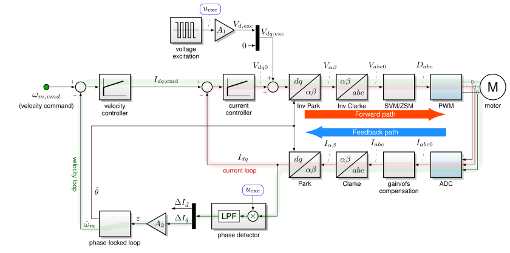

5.4.5. 零速/最大转矩（ZS/MT）¶
5.4.5.1. 概述¶
零速/最大转矩（ZS/MT）为某些具有 转子凸性的永磁同步电机，如内置永磁同步电机（IPMSM），在静止和中等速度下提供高转矩能力。
ZS/MT 施加高频激励信号，通过电机的电感特性来估计位置。（这使它成为一个 侵入式 估计器。） 图 5.74 展示了 ZS/MT 的高层方框图，包含激励、相位检测和锁相环模块。

图 5.74 ZS/MT 方框图¶
5.4.5.2. 更多信息¶
此功能从 MCAF R7 开始免费提供，但文档仅应请提供。如需更多信息，请 联系 Microchip。